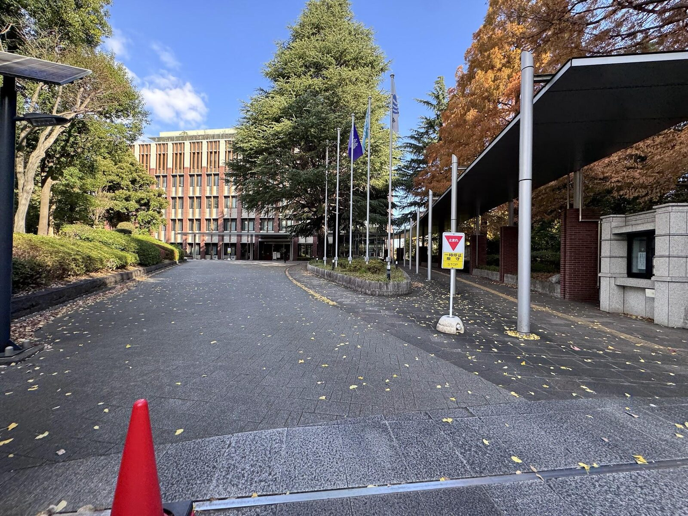
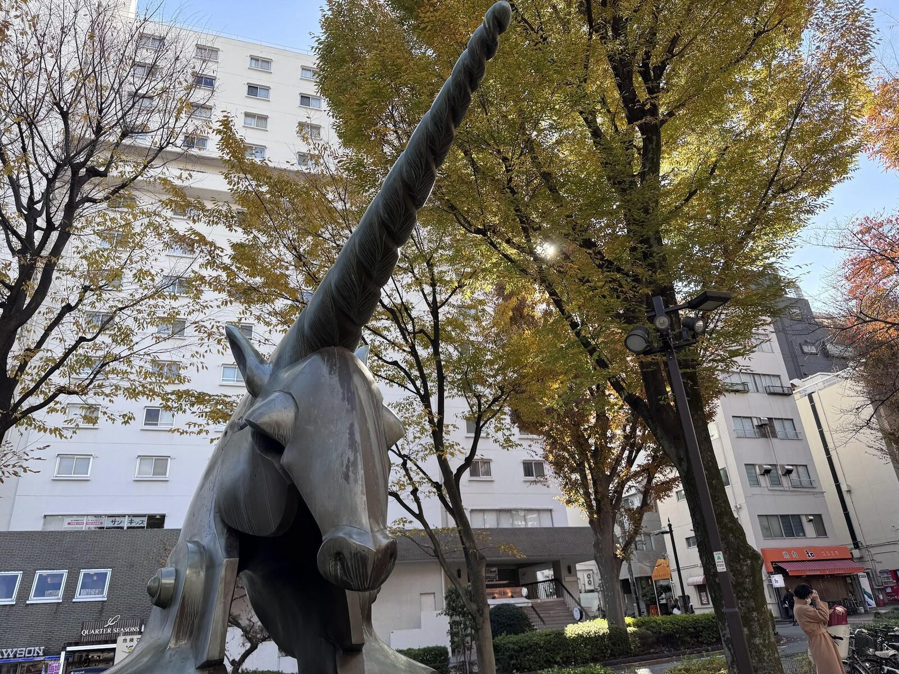
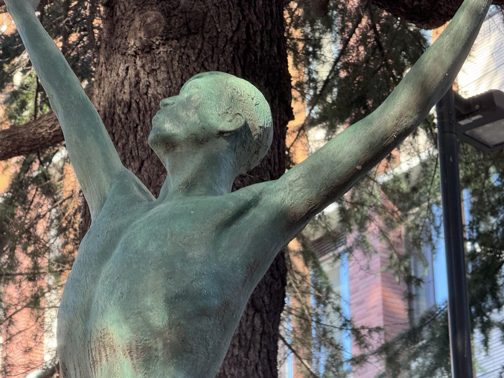
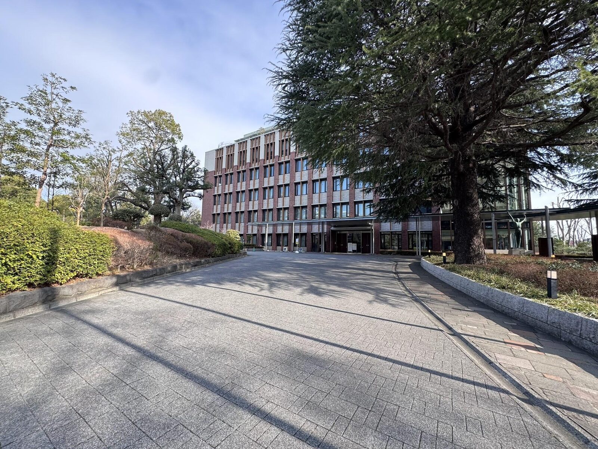
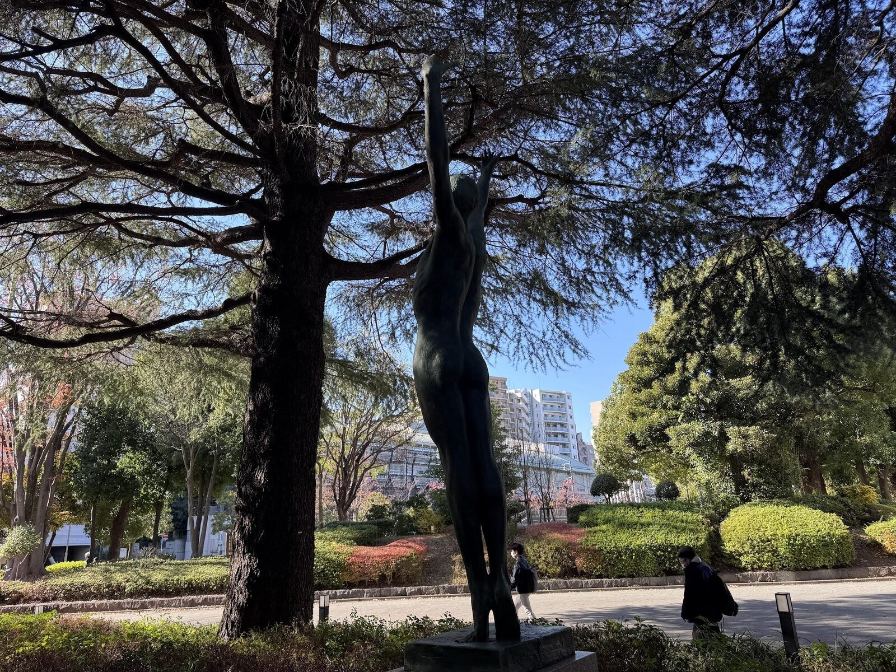
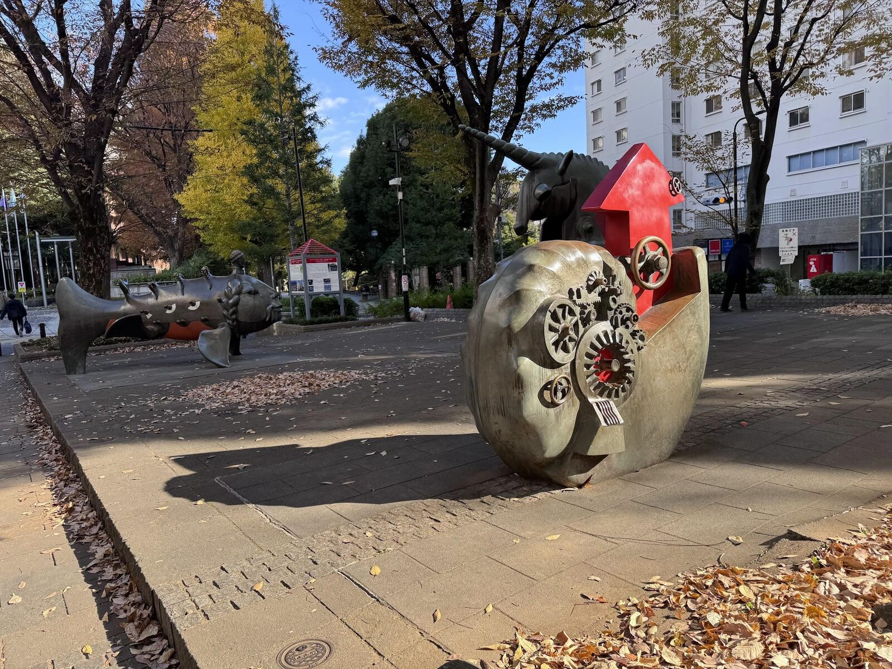
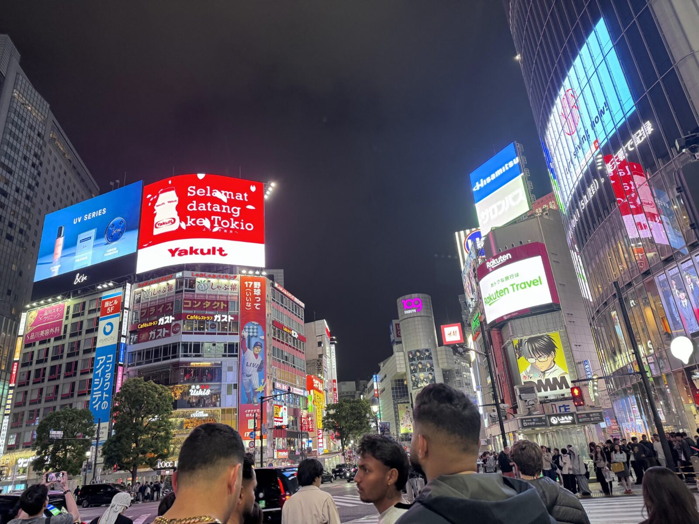
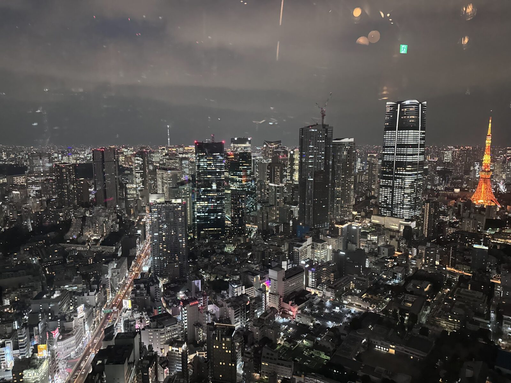

The 2nd International Symposium of Egyptology in Tokyo (ISET 2026)
第2回 東京エジプト学国際シンポジウム（ISET 2026）
The Next Day after CRE26 Tokyo // post-conference symposium cre26.tokyo →A single-day symposium//16 July 2026 at the University of Tsukuba, Tokyo Campus (Lecture Room 120) — also streamed online.
The International Symposium of Egyptology in Tokyo / Tsukuba convenes a focused, day-long forum for scholars working across the disciplines that constitute the study of ancient Egypt.
ISET·26 convenes the very next day after CRE26 Tokyo — the Current Research in Egyptology conference — as its post-conference symposium, so that visiting scholars can extend their stay in Tokyo for a further day of exchange.
Following the inaugural edition, ISET·26 assembles eleven papers delivered by twelve invited scholars from leading institutions for a programme of papers, dialogue, and collegial exchange held in central Tokyo, hosted by the Tokyo Campus of the University of Tsukuba (Lecture Room 120) and streamed online.
The symposium foregrounds current fieldwork, philological inquiry, and methodological innovation, spanning ancient, Coptic, and Islamic Egypt, while fostering sustained conversation between researchers based in Japan and the wider international community of Egyptologists.
The day closes with an excursion to the Ancient Egyptian Museum in Shibuya — a rare site in Japan for the direct study of pharaonic-period artefacts — followed by a night view of the city from the Tokyo Metropolitan Government Building in Shinjuku.
All sessions of ISET·26 are held in Lecture Room 120 at the Tokyo Campus of the University of Tsukuba (nearest station: Myōgadani), with the programme also streamed online.
Following the sessions, participants visit the Ancient Egyptian Museum in Shibuya — a rare opportunity in Japan to view a curated collection of pharaonic-period artefacts — guided by its president, Dr. Tadashi Kikugawa.
The route passes the famous Shibuya scramble crossing en route from the symposium.
The day concludes in Shinjuku with a night view of the city from the observatory of the Tokyo Metropolitan Government Building, overlooking the skyscraper district.
An optional curator's tour of the Printing Museum, Tokyo is offered the following day for interested participants.








A peer-curated volume drawn from the papers delivered at ISET·26 will appear in print within one to three years of the symposium, gathering the contributions into a single scholarly reference. 本シンポジウムの論集は、会期の1〜3年後に刊行される予定です。